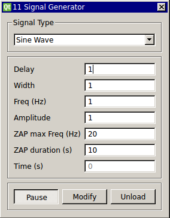

Requirements: Generator class (included)
Limitations: none noted

This module generates the following signals: 1. Sine Wave: needs frequency and amplitude 2. Monophasic Square Wave: needs delay, pulse width, and pulse amplitude 3. Biphasic Square Wave: needs delay, pulse width, and pulse amplitude 4. Sawtooth Wave: needs delay, pulse width, and maximum amplitude 5. ZAP Stimulus: needs starting and ending frequencies, amplitude, and duration of ZAP
All the signals are continuous except for the ZAP stimulus, which has a specified duration. Only the relevant parameters are used to generate the waveforms. This module is already included in RTXI v1.3+. You may edit this source code (eg. adding additional waveforms). Compiling and installing this module will then overwrite the bundled version of the signal generator.